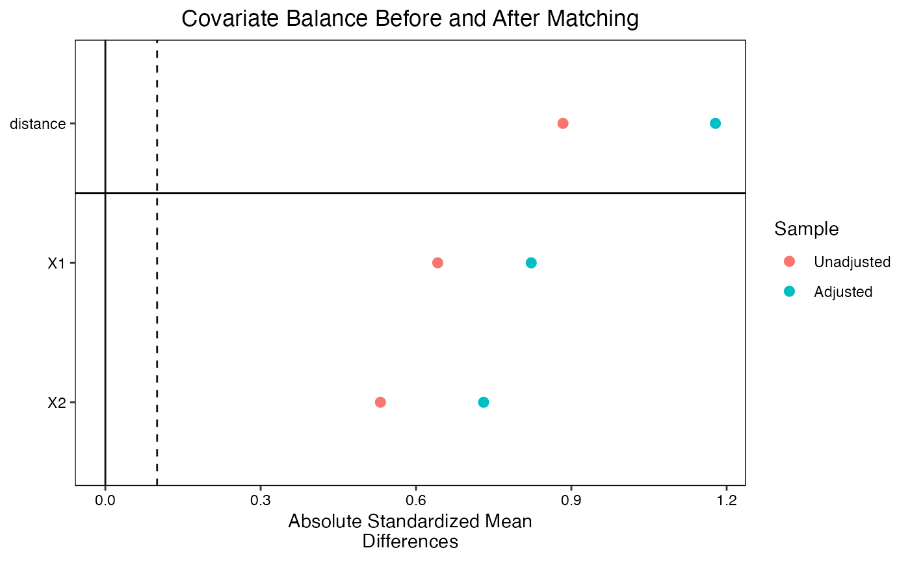

Covariate Balance Diagnostics in Causal Inference
covariate-balance-diagnostics.Rmd⚖️ Covariate Balance Diagnostics
Ensuring that covariates are balanced across treatment groups is critical for reducing bias in causal inference. Diagnostics help verify whether matching or weighting strategies have achieved this.
1. 🧪 Simulate Confounded Data
set.seed(123)
n <- 1000
X1 <- rnorm(n)
X2 <- rbinom(n, 1, 0.5)
logit_p <- -0.5 + 0.7 * X1 + 1.2 * X2
p_treat <- 1 / (1 + exp(-logit_p))
W <- rbinom(n, 1, p_treat)
Y <- 3 * W + 0.5 * X1 + 0.8 * X2 + rnorm(n)
data <- data.frame(X1, X2, W, Y)2. 🎯 Perform Propensity Score Matching
match_model <- matchit(W ~ X1 + X2, data = data, method = "nearest", distance = "logit")
summary(match_model)##
## Call:
## matchit(formula = W ~ X1 + X2, data = data, method = "nearest",
## distance = "logit")
##
## Summary of Balance for All Data:
## Means Treated Means Control Std. Mean Diff. Var. Ratio eCDF Mean
## distance 0.6128 0.4582 0.8838 0.8746 0.2245
## X1 0.2922 -0.3106 0.6420 0.9700 0.1739
## X2 0.6125 0.3537 0.5313 . 0.2588
## eCDF Max
## distance 0.3342
## X1 0.2779
## X2 0.2588
##
## Summary of Balance for Matched Data:
## Means Treated Means Control Std. Mean Diff. Var. Ratio eCDF Mean
## distance 0.6643 0.4582 1.1782 0.5242 0.3023
## X1 0.4617 -0.3106 0.8225 0.8641 0.2261
## X2 0.7096 0.3537 0.7305 . 0.3559
## eCDF Max Std. Pair Dist.
## distance 0.4803 1.1782
## X1 0.3865 1.0319
## X2 0.3559 0.8829
##
## Sample Sizes:
## Control Treated
## All 458 542
## Matched 458 458
## Unmatched 0 84
## Discarded 0 03. 📊 Balance Diagnostics with cobalt
love.plot(match_model, binary = "std", var.order = "unadjusted",
abs = TRUE, thresholds = c(m = .1),
title = "Covariate Balance Before and After Matching")